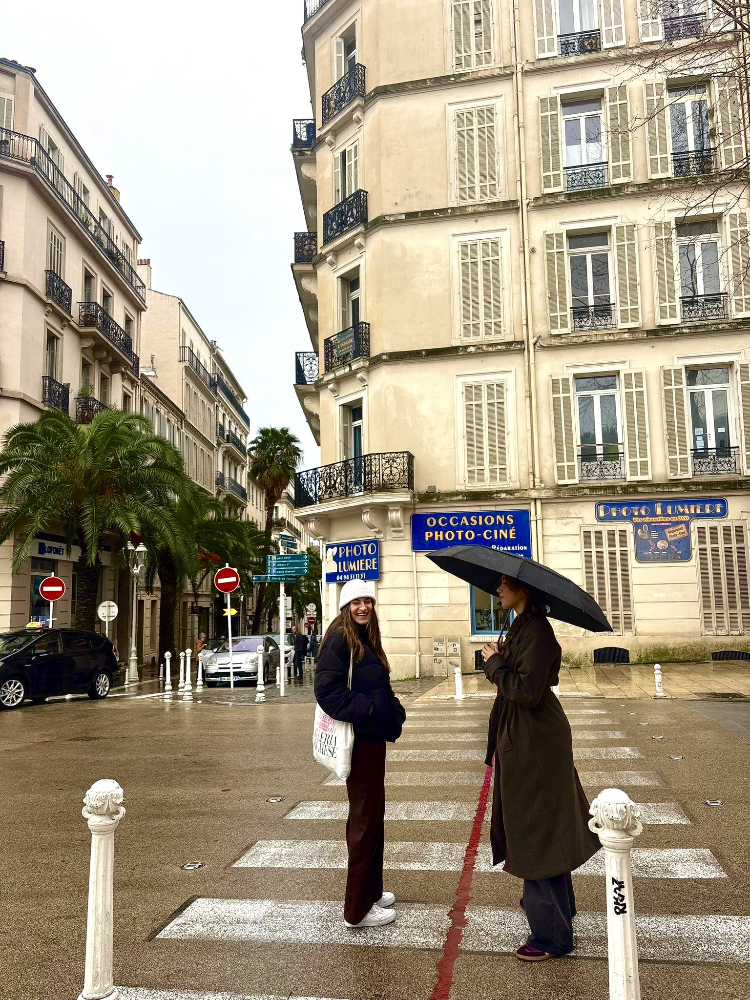
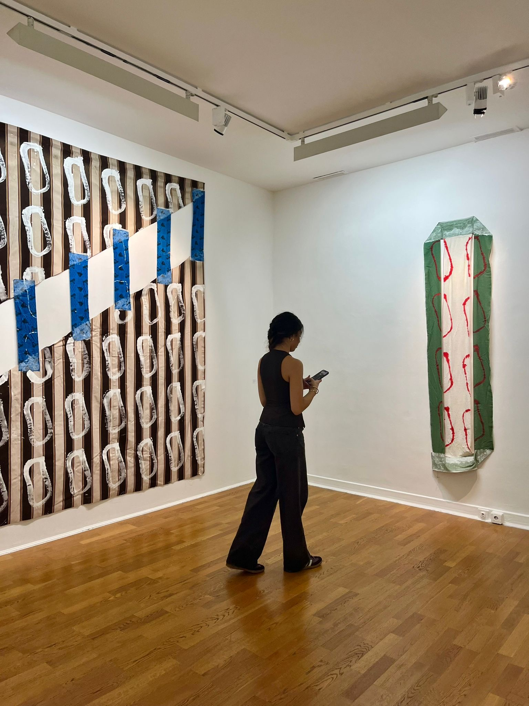

They say Marseille isn’t for the faint of heart, but rather for those who like their beauty served with a side of grit and a lot of soul. This blog is my digital window into life as an expat in France’s oldest, sun-drenched, and most rebellious city. From the limestone heights of the Calanques to the spray-painted alleys of Cours Julien, I’m documenting the evolution from a wide-eyed student to a local regular at the boulangerie. Expect a curated blend of the "Marseille aesthetic"—think sun-bleached terracotta, the deep azure of the Mediterranean, and the effortless, unpolished cool that defines the South. Whether I’m navigating the academic rigors of KEGDE Business School or hunting for the perfect sunset spot at le Corniche, this space is a collection of the sights, sounds, and salt-air moments that make this journey mine. Grab a café and stay a while; we’re living on Mediterranean time now.
Being in Marseille has been an absolute sensory feast, blending a gritty, authentic soul with the shimmering beauty of the Mediterranean. I’ve found myself captivated by the vibrant energy of the Vieux-Port at sunrise, where the salty mist meets the smell of fresh catch, and the winding, street-art-drenched alleys of Le Panier that feel like a living museum. Whether I’m hiking the rugged, limestone cliffs of the Calanques to reach that perfect turquoise water or simply losing track of time over a pastis and a bowl of bouillabaisse, the city’s defiant charm is infectious. There is a raw, unpretentious pulse here—a melting pot of cultures and history—that makes every afternoon feel like an adventure rather than just a vacation.